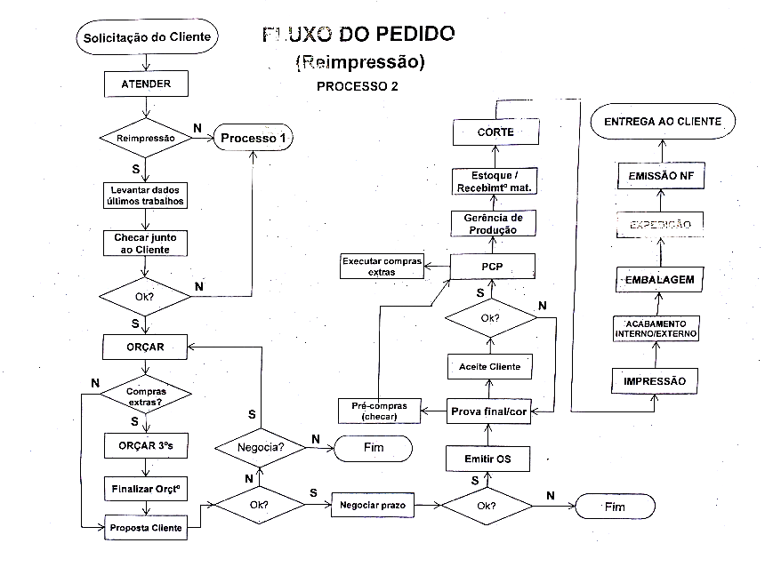
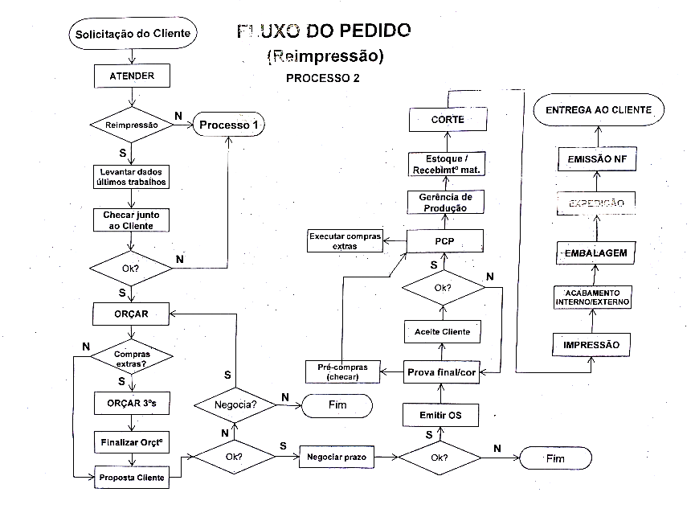
 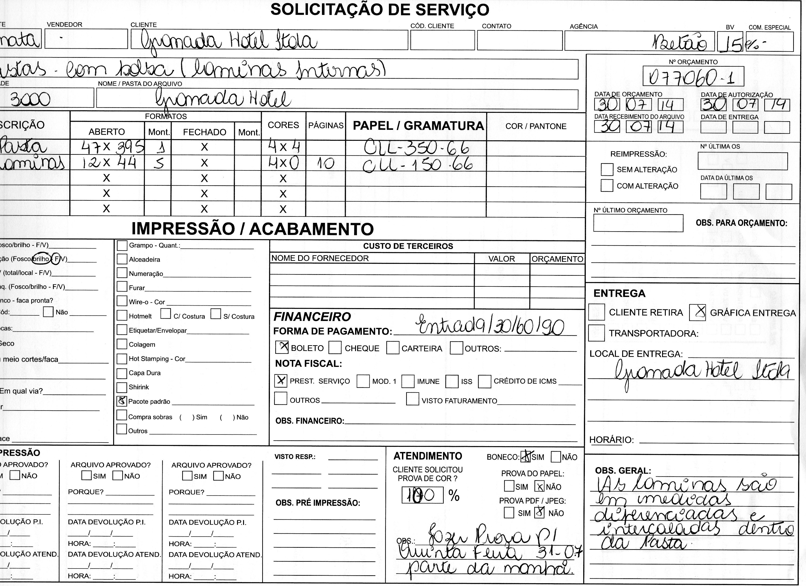
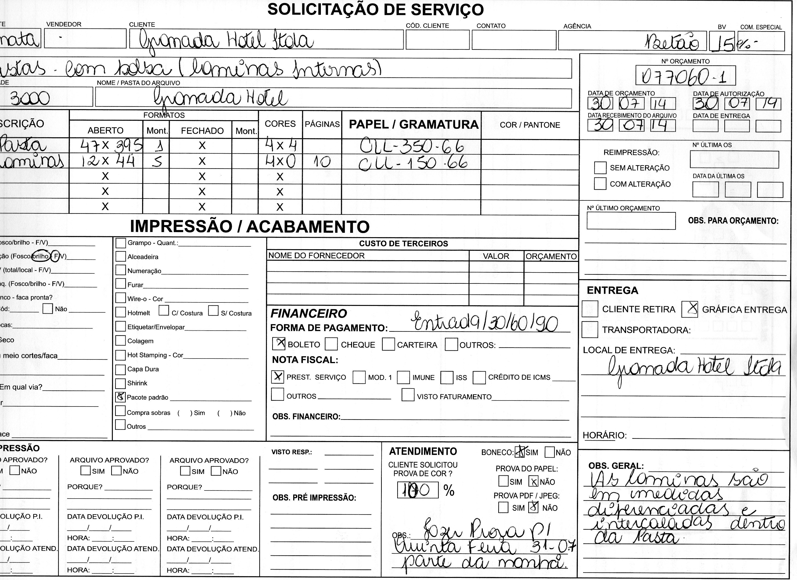
 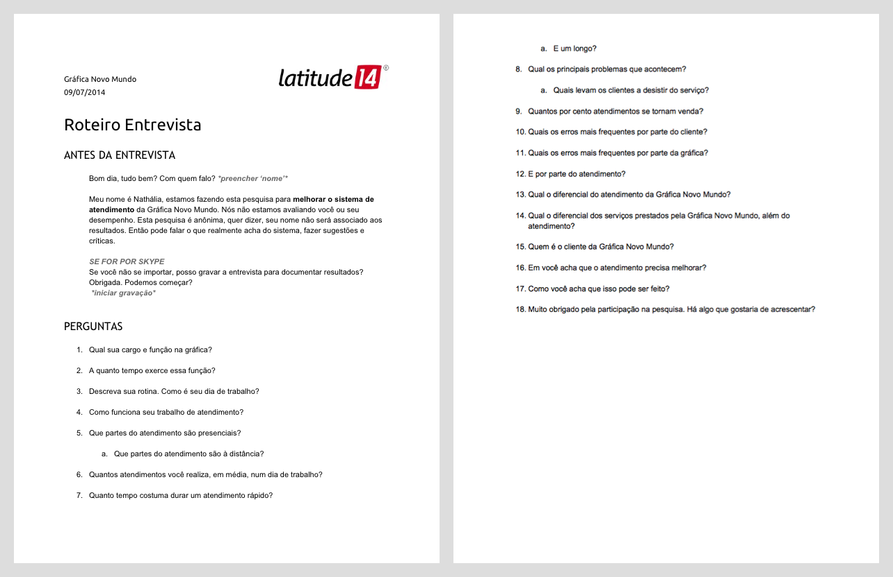
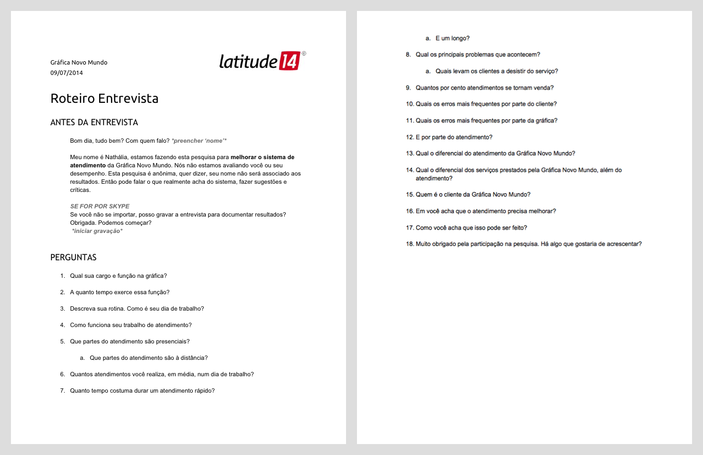
 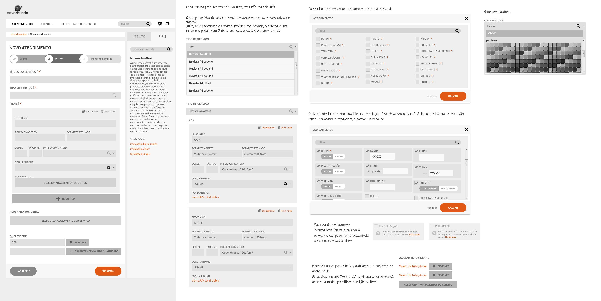
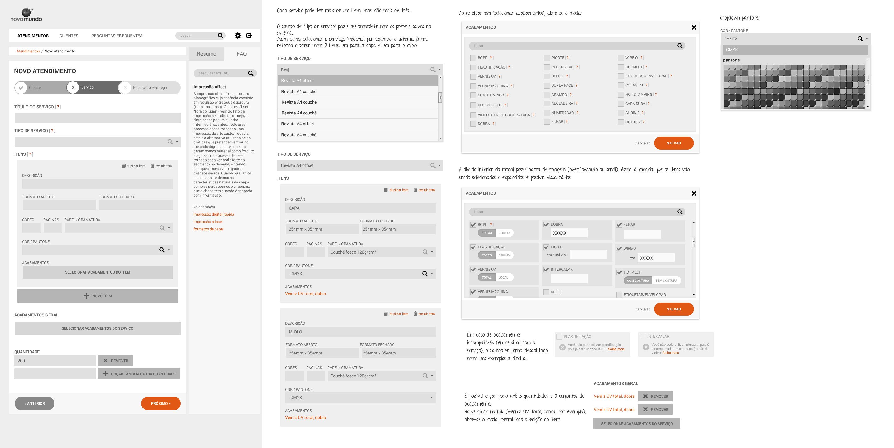
 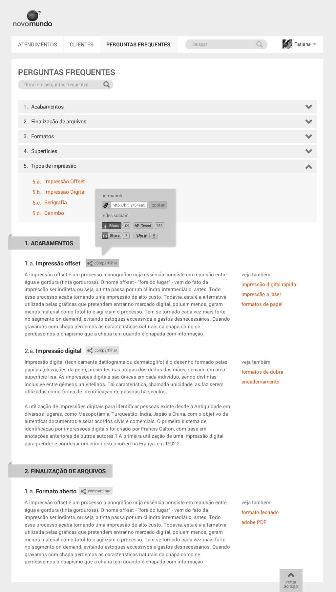
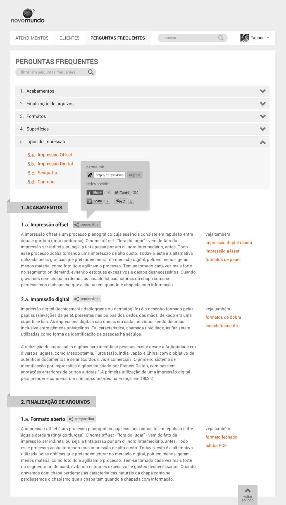
 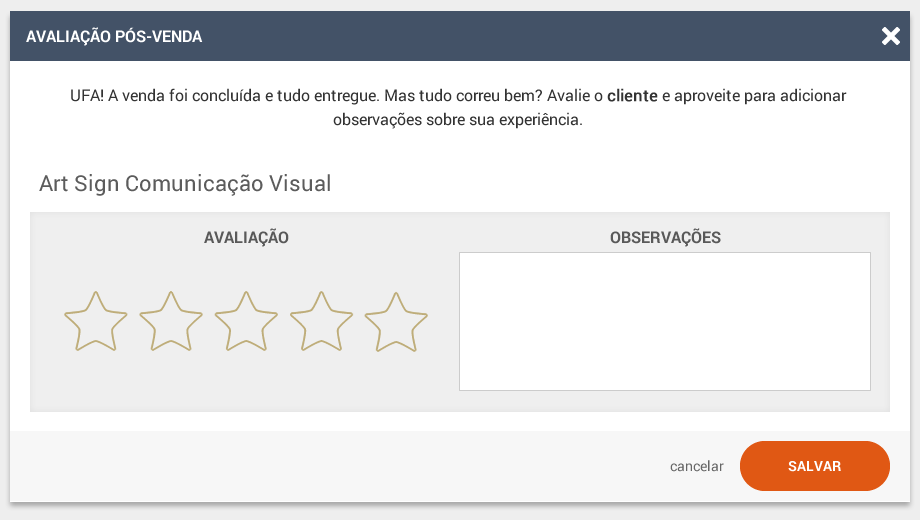
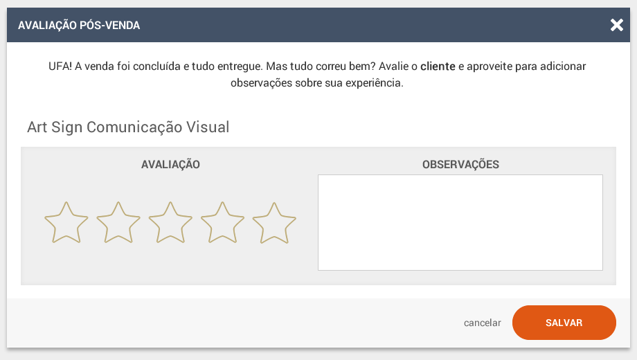
 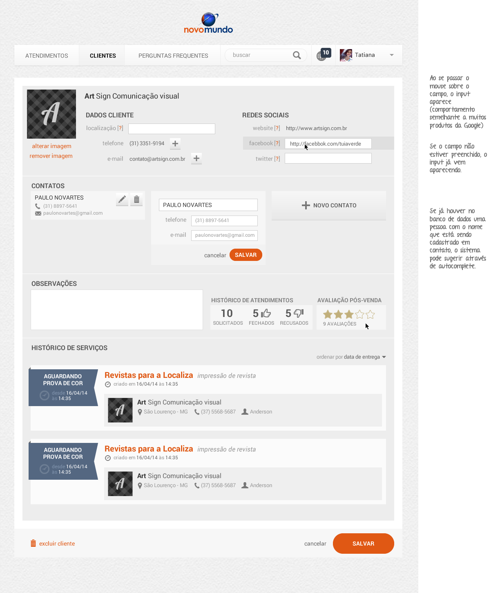
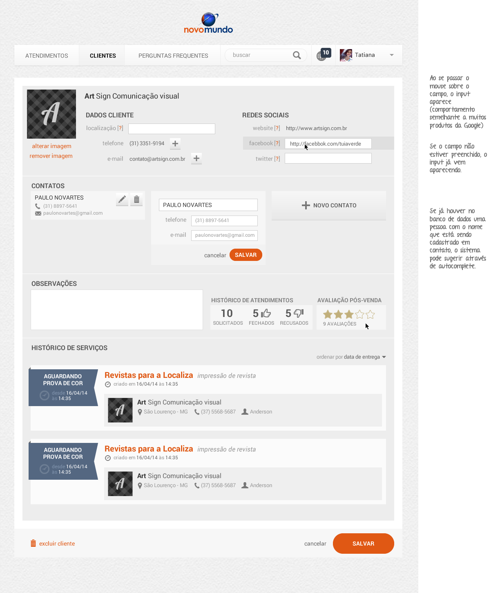
 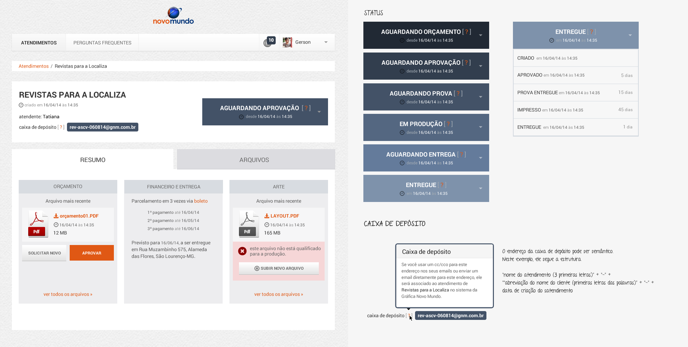
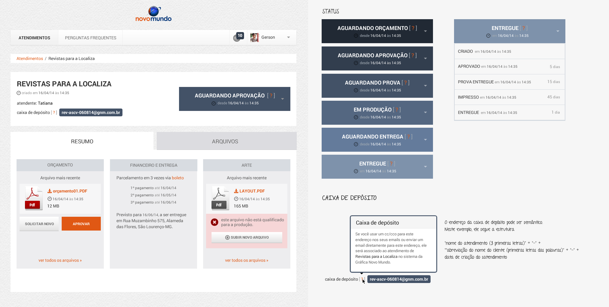
2014 Novo Mundo (printing services)
- Interviews
- Prototyping
- UI design
The Problem
Novo Mundo used to have a software for the production sector, but none for the front of the house staff, and they still had to rely on paper documentation of their workflow. Their clients are mostly companies, rather than individuals, and they don’t know much about graphic production. The customer service representative must be always ready to answer their questions. They also wanted to improve the productivity on that sector.
The Solution
One of the solutions for the productivity was to create "types of services", which are presets of groups of services. This way, the customer service representative can create presets for the most quoted products, for example, "colour magazine", that includes the printing of a 50 pages colored brochure with a cover that has localized varnish. This way, they can spend less time on each service.
Other solution was to create a panel on the right of the screen where the customer service representative can check informations the client might request about the graphic services, such as what kinds of binding and finishing they have and how are they made.
On the clients list, the customer service representatives could also evaluate them and include personal notes, so they know better how to deal with regular clients. For security matters and privacy, this information is hidden: you can only check by hovering the mouse over it.
The application also reunite all the emails about each job in one specific place, so the user won't get confused with many e-mail windows opened.
Some of the final users gave us great feedback, they liked the interface mostly because they can do everything in one place only.
For the second demand, I designed the customer interface. There, the customers can check their printing job details, files and also look up the frequently asked questions. They can also send messages to the customer service representatives and check information about all the services provided by Novo Mundo Printing Services.